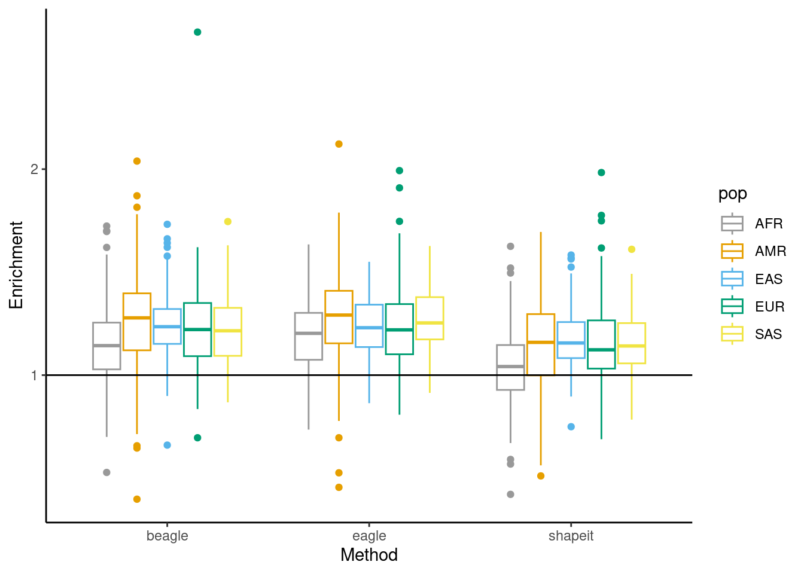

Genomic Context of Phasing Errors
Andy Beck
2024-02-16
Last updated: 2024-02-20
Checks: 6 1
Knit directory: phasing/
This reproducible R Markdown analysis was created with workflowr (version 1.7.0). The Checks tab describes the reproducibility checks that were applied when the results were created. The Past versions tab lists the development history.
Great! Since the R Markdown file has been committed to the Git repository, you know the exact version of the code that produced these results.
Great job! The global environment was empty. Objects defined in the global environment can affect the analysis in your R Markdown file in unknown ways. For reproduciblity it’s best to always run the code in an empty environment.
The command set.seed(20220221) was run prior to running
the code in the R Markdown file. Setting a seed ensures that any results
that rely on randomness, e.g. subsampling or permutations, are
reproducible.
Great job! Recording the operating system, R version, and package versions is critical for reproducibility.
Nice! There were no cached chunks for this analysis, so you can be confident that you successfully produced the results during this run.
Using absolute paths to the files within your workflowr project makes it difficult for you and others to run your code on a different machine. Change the absolute path(s) below to the suggested relative path(s) to make your code more reproducible.
| absolute | relative |
|---|---|
| /net/snowwhite/home/beckandy/research/phasing/output/final_switch_errors/switch_errors/eagle/annotated/ | output/final_switch_errors/switch_errors/eagle/annotated |
| /net/snowwhite/home/beckandy/research/phasing/output/final_switch_errors/switch_errors/shapeit/annotated/ | output/final_switch_errors/switch_errors/shapeit/annotated |
| /net/snowwhite/home/beckandy/research/phasing/output/final_switch_errors/switch_errors/beagle/annotated/ | output/final_switch_errors/switch_errors/beagle/annotated |
| /net/snowwhite/home/beckandy/research/phasing/output/final_switch_errors/vcf_n_sites/ | output/final_switch_errors/vcf_n_sites |
| /net/snowwhite/home/beckandy/research/phasing/output/final_switch_errors/whatshap/ | output/final_switch_errors/whatshap |
| /net/snowwhite/home/beckandy/research/phasing/output/final_switch_errors/het_loc/annotated/ | output/final_switch_errors/het_loc/annotated |
| /net/snowwhite/home/beckandy/research/phasing/output/chrX_maf_simple.tsv | output/chrX_maf_simple.tsv |
Great! You are using Git for version control. Tracking code development and connecting the code version to the results is critical for reproducibility.
The results in this page were generated with repository version 81c213f. See the Past versions tab to see a history of the changes made to the R Markdown and HTML files.
Note that you need to be careful to ensure that all relevant files for
the analysis have been committed to Git prior to generating the results
(you can use wflow_publish or
wflow_git_commit). workflowr only checks the R Markdown
file, but you know if there are other scripts or data files that it
depends on. Below is the status of the Git repository when the results
were generated:
Ignored files:
Ignored: .Rhistory
Ignored: .Rproj.user/
Ignored: data/1kgp/
Ignored: data/consensus/
Ignored: data/gnomAD/
Ignored: data/mask/
Ignored: data/ovary/
Ignored: data/recomb/
Ignored: data/ref/
Ignored: data/shapeit/
Ignored: output/2023_switch_errors/
Ignored: output/X_hets/
Ignored: output/admix_switch_errors/
Ignored: output/afr_eur_ref/
Ignored: output/background_rates/
Ignored: output/figures/
Ignored: output/filter_switch_errors/
Ignored: output/final_switch_errors/
Ignored: output/gnomad/
Ignored: output/male_only_reference/
Ignored: output/nygc/
Ignored: output/singleton_switch_errors/
Ignored: plink.log
Ignored: sandbox/
Unstaged changes:
Modified: analysis/_site.yml
Modified: code/batch_annotate_het.sh
Modified: code/batch_annotate_switch.sh
Modified: code/batch_diploid_v3.sh
Modified: code/batch_vote_phase.sh
Note that any generated files, e.g. HTML, png, CSS, etc., are not included in this status report because it is ok for generated content to have uncommitted changes.
These are the previous versions of the repository in which changes were
made to the R Markdown (analysis/genomic_features.Rmd) and
HTML (docs/genomic_features.html) files. If you’ve
configured a remote Git repository (see ?wflow_git_remote),
click on the hyperlinks in the table below to view the files as they
were in that past version.
| File | Version | Author | Date | Message |
|---|---|---|---|---|
| Rmd | 81c213f | Andy Beck | 2024-02-20 | wflow_publish("analysis/genomic_features.Rmd") |
Introduction
Here in this document we endeavor to further characterize the genomic context in which statistical phasing errors occur. Of particular interest is the comparison of contexts in which phasing errors occur in the three methods we compare in our analyses. In this document, we will evaluate the genomic context as defined by
- GC content
- Recombination rate
- Replication Timing
- CpG status at heterozygous positions
- Minor allele frequencies at heterozygous positions
Loading Data
Single Synthetic Diploid
In our results, we have for each synthetic diploid the list of all heterozygous positions at which an error can occur. Additionally, we have annotated each of these sites with its CpG status, along with the 3-mer nucleotide motif centered at the position. For example, if we load this list for a single synthetic diploid:
load_het_pos <- function(id, het_loc_dir){
fname <- paste0(het_loc_dir, "pair_", id, ".csv")
return(read_csv(fname, show_col_types = FALSE))
}
load_het_pos(1, het_loc_dir) %>%
head() %>%
knitr::kable()| pos | gt | cpg | motif |
|---|---|---|---|
| 2785460 | 0/1 | 0 | AAT |
| 2785503 | 0/1 | 0 | GAT |
| 2785592 | 1/0 | 0 | CAT |
| 2786294 | 0/1 | 0 | TGT |
| 2786428 | 1/0 | 0 | CTG |
| 2786515 | 0/1 | 0 | CAC |
Additionally, for each site we will want to append the error status for each of the three algorithms. To do so, we will also need to load the switch error locations, while also identifying which errors are flips:
load_switch_df <- function(id, switch_dir){
fname <- paste0(switch_dir, "switch_", id, ".csv")
results <- read_csv(fname, show_col_types = FALSE)
flip_loc <- get_flip_pos(results)
results$is_flip <- (results$pos_start %in% flip_loc) | (results$pos_end %in% flip_loc)
results$flip <- results$pos_end %in% flip_loc
results <- results %>%
filter(flip | (!is_flip & !flip))
return(results %>% select(-is_flip))
}
load_switch_df(1, eagle_switch_dir) %>%
head() %>%
knitr::kable()| pos_start | pos_end | cpg_start | cpg_end | motif_start | end_motif | flip |
|---|---|---|---|---|---|---|
| 2804015 | 2862937 | 0 | 0 | CAT | TGT | FALSE |
| 2903543 | 2916189 | 0 | 0 | CCT | CAG | FALSE |
| 3695276 | 3714940 | 0 | 1 | TCC | CGG | TRUE |
| 3784510 | 3785937 | 0 | 0 | TAT | CAA | FALSE |
| 4710875 | 4712329 | 1 | 0 | ACG | AGA | FALSE |
| 5796471 | 5818454 | 0 | 1 | TTT | CGA | TRUE |
To put everything together, we now want to take our list of heterozygous positions in each synthetic diploid and annotate each position with whether or not the site is a location of an error in each of the three methods:
annotate_het_list <- function(id, het_loc_dir, beagle_dir, eagle_dir, shapeit_dir, df_freq){
result <- load_het_pos(id, het_loc_dir)
df_b <- load_switch_df(id, beagle_dir)
df_e <- load_switch_df(id, eagle_dir)
df_s <- load_switch_df(id, shapeit_dir)
result$switch_b <- result$pos %in% {df_b %>% filter(!flip) %>% pull(pos_start)}
result$flip_b <- result$pos %in% {df_b %>% filter(flip) %>% pull(pos_start)}
result$switch_e <- result$pos %in% {df_e %>% filter(!flip) %>% pull(pos_start)}
result$flip_e <- result$pos %in% {df_e %>% filter(flip) %>% pull(pos_start)}
result$switch_s <- result$pos %in% {df_s %>% filter(!flip) %>% pull(pos_start)}
result$flip_s <- result$pos %in% {df_s %>% filter(flip) %>% pull(pos_start)}
result <- left_join(result,
{df_freq %>%
select(POS, maf)},
by = c("pos" = "POS"))
return(result)
}
annotate_het_list(1, het_loc_dir,
beagle_dir = beagle_switch_dir,
eagle_dir = eagle_switch_dir,
shapeit_dir = shapeit_switch_dir,
df_freq) %>%
filter(switch_b) %>%
head(10) %>%
knitr::kable()| pos | gt | cpg | motif | switch_b | flip_b | switch_e | flip_e | switch_s | flip_s | maf |
|---|---|---|---|---|---|---|---|---|---|---|
| 3714940 | 1/0 | 1 | CGG | TRUE | FALSE | FALSE | FALSE | TRUE | FALSE | 0.0214570 |
| 3753097 | 0/1 | 0 | GAG | TRUE | FALSE | FALSE | FALSE | FALSE | FALSE | 0.2474170 |
| 4471598 | 0/1 | 0 | AAA | TRUE | FALSE | FALSE | FALSE | FALSE | TRUE | 0.0172185 |
| 5796471 | 1/0 | 0 | TTT | TRUE | FALSE | FALSE | TRUE | FALSE | TRUE | 0.0140397 |
| 5821302 | 0/1 | 0 | CAT | TRUE | FALSE | TRUE | FALSE | TRUE | FALSE | 0.2540400 |
| 6248718 | 1/0 | 0 | ACA | TRUE | FALSE | FALSE | FALSE | FALSE | FALSE | 0.0045033 |
| 7810625 | 1/0 | 1 | CGG | TRUE | FALSE | FALSE | TRUE | FALSE | FALSE | 0.0633113 |
| 8014014 | 1/0 | 0 | TTC | TRUE | FALSE | TRUE | FALSE | FALSE | TRUE | 0.3441060 |
| 8486608 | 0/1 | 0 | AGA | TRUE | FALSE | TRUE | FALSE | TRUE | FALSE | 0.0063576 |
| 9700979 | 0/1 | 0 | GTG | TRUE | FALSE | FALSE | FALSE | TRUE | FALSE | 0.1165560 |
Summary Statistics per SD
Let us now load the results for a single synthetic diploid and compute the statistics we may be interested in collecting across all synthetic diploids. While we have already looked at simple metrics such as total number of errors of each type for each method, we are now also interested in things such as:
- Overlap of errors across methods
- Enrichment/Depletion of errors based on CpG status, 3mer motif
df <- annotate_het_list(1, het_loc_dir, beagle_switch_dir, eagle_switch_dir, shapeit_switch_dir, df_freq)Let’s first look at all heterozygous positions and report proportions for both 3mers and CpG status:
pct_cpg <- sum(df$cpg) / length(df$cpg)
background_3mer <- df %>%
group_by(motif) %>%
summarize(n = n())
# to do: table to df (or just make a df to begin with using group_by and summary)For now, I’m only going to consider enrichment at CpG, since this is much easier to digest (you know, one number instead of 64). Let’s now take a gander at looking at the overlap of errors:
pct_b_e <- ((df$switch_b | df$flip_b) & (df$switch_e | df$flip_e)) %>% sum()All in one function
get_summary_stats <- function(id, het_loc_dir, beagle_switch_dir, eagle_switch_dir, shapeit_switch_dir, df_freq){
df <- annotate_het_list(id, het_loc_dir, beagle_switch_dir, eagle_switch_dir, shapeit_switch_dir, df_freq)
# stats on all positions
n_het <- length(df$pos)
n_cpg <- sum(df$cpg)
n_pos <- max(df$pos) - min(df$pos)
median_maf <- median(df$maf, na.rm=T)
mean_maf <- mean(df$maf, na.rm =T)
# total errors
n_err_beagle <- sum((df$switch_b | df$flip_b))
n_err_eagle <- sum((df$switch_e | df$flip_e))
n_err_shapeit <- sum((df$switch_s | df$flip_s))
med_maf_err_beagle <- df %>% filter(switch_b | flip_b) %>% pull(maf) %>% median(na.rm=T)
med_maf_err_eagle <- df %>% filter(switch_e | flip_e) %>% pull(maf) %>% median(na.rm=T)
med_maf_err_shapeit <- df %>% filter(switch_s | flip_s) %>% pull(maf) %>% median(na.rm=T)
mean_maf_err_beagle <- df %>% filter(switch_b | flip_b) %>% pull(maf) %>% mean(na.rm=T)
mean_maf_err_eagle <- df %>% filter(switch_e | flip_e) %>% pull(maf) %>% mean(na.rm=T)
mean_maf_err_shapeit <- df %>% filter(switch_s | flip_s) %>% pull(maf) %>% mean(na.rm=T)
## CpG
n_err_beagle_cpg <- sum((df$switch_b | df$flip_b) & df$cpg == 1)
n_err_eagle_cpg <- sum((df$switch_e | df$flip_e) & df$cpg == 1)
n_err_shapeit_cpg <- sum((df$switch_s | df$flip_s) & df$cpg == 1)
# number swtiches
n_switch_beagle <- sum(df$switch_b)
n_switch_eagle <- sum(df$switch_e)
n_switch_shapeit <- sum(df$switch_s)
med_maf_switch_beagle <- df %>% filter(switch_b) %>% pull(maf) %>% median(na.rm=T)
med_maf_switch_eagle <- df %>% filter(switch_e) %>% pull(maf) %>% median(na.rm=T)
med_maf_switch_shapeit <- df %>% filter(switch_s) %>% pull(maf) %>% median(na.rm=T)
mean_maf_switch_beagle <- df %>% filter(switch_b) %>% pull(maf) %>% mean(na.rm=T)
mean_maf_switch_eagle <- df %>% filter(switch_e) %>% pull(maf) %>% mean(na.rm=T)
mean_maf_switch_shapeit <- df %>% filter(switch_s) %>% pull(maf) %>% mean(na.rm=T)
## CpG
n_switch_beagle_cpg <- sum(df$switch_b & df$cpg == 1)
n_switch_eagle_cpg <- sum(df$switch_e & df$cpg == 1)
n_switch_shapeit_cpg <- sum(df$switch_s & df$cpg == 1)
# number flips
n_flip_beagle <- sum(df$flip_b)
n_flip_eagle <- sum(df$flip_e)
n_flip_shapeit <- sum(df$flip_s)
med_maf_flip_beagle <- df %>% filter(flip_b) %>% pull(maf) %>% median(na.rm=T)
med_maf_flip_eagle <- df %>% filter(flip_e) %>% pull(maf) %>% median(na.rm=T)
med_maf_flip_shapeit <- df %>% filter(flip_s) %>% pull(maf) %>% median(na.rm=T)
mean_maf_flip_beagle <- df %>% filter(flip_b) %>% pull(maf) %>% median(na.rm=T)
mean_maf_flip_eagle <- df %>% filter(flip_e) %>% pull(maf) %>% median(na.rm=T)
mean_maf_flip_shapeit <- df %>% filter(flip_s) %>% pull(maf) %>% median(na.rm=T)
## CpG
n_flip_beagle_cpg <- sum(df$flip_b & df$cpg == 1)
n_flip_eagle_cpg <- sum(df$flip_e & df$cpg == 1)
n_flip_shapeit_cpg <- sum(df$flip_s & df$cpg == 1)
# Overlap metrics
## total errors
pct_b_e <- (((df$switch_b | df$flip_b) & (df$switch_e | df$flip_e)) %>% sum()) / n_err_beagle
pct_b_s <- (((df$switch_b | df$flip_b) & (df$switch_s | df$flip_s)) %>% sum()) / n_err_beagle
pct_e_b <- (((df$switch_e | df$flip_e) & (df$switch_b | df$flip_b)) %>% sum()) / n_err_eagle
pct_e_s <- (((df$switch_e | df$flip_e) & (df$switch_s | df$flip_s)) %>% sum()) / n_err_eagle
pct_s_e <- (((df$switch_s | df$flip_s) & (df$switch_e | df$flip_e)) %>% sum()) / n_err_shapeit
pct_s_b <- (((df$switch_s | df$flip_s) & (df$switch_b | df$flip_b)) %>% sum()) / n_err_shapeit
## switches
pct_sw_b_e <- (((df$switch_b ) & (df$switch_e | df$flip_e)) %>% sum()) / n_err_beagle
pct_sw_b_s <- (((df$switch_b ) & (df$switch_s | df$flip_s)) %>% sum()) / n_err_beagle
pct_sw_e_b <- (((df$switch_e ) & (df$switch_b | df$flip_b)) %>% sum()) / n_err_eagle
pct_sw_e_s <- (((df$switch_e ) & (df$switch_s | df$flip_s)) %>% sum()) / n_err_eagle
pct_sw_s_e <- (((df$switch_s ) & (df$switch_e | df$flip_e)) %>% sum()) / n_err_shapeit
pct_sw_s_b <- (((df$switch_s ) & (df$switch_b | df$flip_b)) %>% sum()) / n_err_shapeit
## flips
pct_fl_b_e <- (((df$flip_b ) & (df$switch_e | df$flip_e)) %>% sum()) / n_err_beagle
pct_fl_b_s <- (((df$flip_b ) & (df$switch_s | df$flip_s)) %>% sum()) / n_err_beagle
pct_fl_e_b <- (((df$flip_e ) & (df$switch_b | df$flip_b)) %>% sum()) / n_err_eagle
pct_fl_e_s <- (((df$flip_e ) & (df$switch_s | df$flip_s)) %>% sum()) / n_err_eagle
pct_fl_s_e <- (((df$flip_s ) & (df$switch_e | df$flip_e)) %>% sum()) / n_err_shapeit
pct_fl_s_b <- (((df$flip_s ) & (df$switch_b | df$flip_b)) %>% sum()) / n_err_shapeit
result <- data.frame(n_het = n_het,
n_cpg = n_cpg,
n_pos = n_pos,
median_maf = median_maf,
mean_maf = mean_maf,
n_err_beagle = n_err_beagle,
n_err_eagle = n_err_eagle,
n_err_shapeit = n_err_shapeit,
n_err_beagle_cpg = n_err_beagle_cpg,
n_err_eagle_cpg = n_err_eagle_cpg,
n_err_shapeit_cpg = n_err_shapeit_cpg,
med_maf_err_beagle = med_maf_err_beagle,
med_maf_err_eagle = med_maf_err_eagle,
med_maf_err_shapeit = med_maf_err_shapeit,
mean_maf_err_beagle = mean_maf_err_beagle,
mean_maf_err_eagle = mean_maf_err_eagle,
mean_maf_err_shapeit = mean_maf_err_shapeit,
n_switch_beagle = n_switch_beagle,
n_switch_eagle = n_switch_eagle,
n_switch_shapeit = n_switch_shapeit,
n_switch_beagle_cpg = n_switch_beagle_cpg,
n_switch_eagle_cpg = n_switch_eagle_cpg,
n_switch_shapeit_cpg = n_switch_shapeit_cpg,
med_maf_switch_beagle = med_maf_switch_beagle,
med_maf_switch_eagle = med_maf_switch_eagle,
med_maf_switch_shapeit = med_maf_switch_shapeit,
mean_maf_switch_beagle = mean_maf_switch_beagle,
mean_maf_switch_eagle = mean_maf_switch_eagle,
mean_maf_switch_shapeit = mean_maf_switch_shapeit,
n_flip_beagle = n_flip_beagle,
n_flip_eagle = n_flip_eagle,
n_flip_shapeit = n_flip_shapeit,
n_flip_beagle_cpg = n_flip_beagle_cpg,
n_flip_eagle_cpg = n_flip_eagle_cpg,
n_flip_shapeit_cpg = n_flip_shapeit_cpg,
med_maf_flip_beagle = med_maf_flip_beagle,
med_maf_flip_eagle = med_maf_flip_eagle,
med_maf_flip_shapeit = med_maf_flip_shapeit,
mean_maf_flip_beagle = mean_maf_flip_beagle,
mean_maf_flip_eagle = mean_maf_flip_eagle,
mean_maf_flip_shapeit = mean_maf_flip_shapeit,
pct_b_e = pct_b_e,
pct_b_s = pct_b_s,
pct_e_b = pct_e_b,
pct_e_s = pct_e_s,
pct_s_b = pct_s_b,
pct_s_e = pct_s_e,
pct_sw_b_e = pct_sw_b_e,
pct_sw_b_s = pct_sw_b_s,
pct_sw_e_b = pct_sw_e_b,
pct_sw_e_s = pct_sw_e_s,
pct_sw_s_b = pct_sw_s_b,
pct_sw_s_e = pct_sw_s_e,
pct_fl_b_e = pct_fl_b_e,
pct_fl_b_s = pct_fl_b_s,
pct_fl_e_b = pct_fl_e_b,
pct_fl_e_s = pct_fl_e_s,
pct_fl_s_b = pct_fl_s_b,
pct_fl_s_e = pct_fl_s_e)
return(result)
}And now let’s load the basic summary statistics from all synthetic diploids:
results <- vector(mode = "list", length = 700)
for(i in 1:700){
print(i)
results[[i]] <- get_summary_stats(i, het_loc_dir, beagle_switch_dir, eagle_switch_dir, shapeit_switch_dir, df_freq)
}[1] 1
[1] 2
[1] 3
[1] 4
[1] 5
[1] 6
[1] 7
[1] 8
[1] 9
[1] 10
[1] 11
[1] 12
[1] 13
[1] 14
[1] 15
[1] 16
[1] 17
[1] 18
[1] 19
[1] 20
[1] 21
[1] 22
[1] 23
[1] 24
[1] 25
[1] 26
[1] 27
[1] 28
[1] 29
[1] 30
[1] 31
[1] 32
[1] 33
[1] 34
[1] 35
[1] 36
[1] 37
[1] 38
[1] 39
[1] 40
[1] 41
[1] 42
[1] 43
[1] 44
[1] 45
[1] 46
[1] 47
[1] 48
[1] 49
[1] 50
[1] 51
[1] 52
[1] 53
[1] 54
[1] 55
[1] 56
[1] 57
[1] 58
[1] 59
[1] 60
[1] 61
[1] 62
[1] 63
[1] 64
[1] 65
[1] 66
[1] 67
[1] 68
[1] 69
[1] 70
[1] 71
[1] 72
[1] 73
[1] 74
[1] 75
[1] 76
[1] 77
[1] 78
[1] 79
[1] 80
[1] 81
[1] 82
[1] 83
[1] 84
[1] 85
[1] 86
[1] 87
[1] 88
[1] 89
[1] 90
[1] 91
[1] 92
[1] 93
[1] 94
[1] 95
[1] 96
[1] 97
[1] 98
[1] 99
[1] 100
[1] 101
[1] 102
[1] 103
[1] 104
[1] 105
[1] 106
[1] 107
[1] 108
[1] 109
[1] 110
[1] 111
[1] 112
[1] 113
[1] 114
[1] 115
[1] 116
[1] 117
[1] 118
[1] 119
[1] 120
[1] 121
[1] 122
[1] 123
[1] 124
[1] 125
[1] 126
[1] 127
[1] 128
[1] 129
[1] 130
[1] 131
[1] 132
[1] 133
[1] 134
[1] 135
[1] 136
[1] 137
[1] 138
[1] 139
[1] 140
[1] 141
[1] 142
[1] 143
[1] 144
[1] 145
[1] 146
[1] 147
[1] 148
[1] 149
[1] 150
[1] 151
[1] 152
[1] 153
[1] 154
[1] 155
[1] 156
[1] 157
[1] 158
[1] 159
[1] 160
[1] 161
[1] 162
[1] 163
[1] 164
[1] 165
[1] 166
[1] 167
[1] 168
[1] 169
[1] 170
[1] 171
[1] 172
[1] 173
[1] 174
[1] 175
[1] 176
[1] 177
[1] 178
[1] 179
[1] 180
[1] 181
[1] 182
[1] 183
[1] 184
[1] 185
[1] 186
[1] 187
[1] 188
[1] 189
[1] 190
[1] 191
[1] 192
[1] 193
[1] 194
[1] 195
[1] 196
[1] 197
[1] 198
[1] 199
[1] 200
[1] 201
[1] 202
[1] 203
[1] 204
[1] 205
[1] 206
[1] 207
[1] 208
[1] 209
[1] 210
[1] 211
[1] 212
[1] 213
[1] 214
[1] 215
[1] 216
[1] 217
[1] 218
[1] 219
[1] 220
[1] 221
[1] 222
[1] 223
[1] 224
[1] 225
[1] 226
[1] 227
[1] 228
[1] 229
[1] 230
[1] 231
[1] 232
[1] 233
[1] 234
[1] 235
[1] 236
[1] 237
[1] 238
[1] 239
[1] 240
[1] 241
[1] 242
[1] 243
[1] 244
[1] 245
[1] 246
[1] 247
[1] 248
[1] 249
[1] 250
[1] 251
[1] 252
[1] 253
[1] 254
[1] 255
[1] 256
[1] 257
[1] 258
[1] 259
[1] 260
[1] 261
[1] 262
[1] 263
[1] 264
[1] 265
[1] 266
[1] 267
[1] 268
[1] 269
[1] 270
[1] 271
[1] 272
[1] 273
[1] 274
[1] 275
[1] 276
[1] 277
[1] 278
[1] 279
[1] 280
[1] 281
[1] 282
[1] 283
[1] 284
[1] 285
[1] 286
[1] 287
[1] 288
[1] 289
[1] 290
[1] 291
[1] 292
[1] 293
[1] 294
[1] 295
[1] 296
[1] 297
[1] 298
[1] 299
[1] 300
[1] 301
[1] 302
[1] 303
[1] 304
[1] 305
[1] 306
[1] 307
[1] 308
[1] 309
[1] 310
[1] 311
[1] 312
[1] 313
[1] 314
[1] 315
[1] 316
[1] 317
[1] 318
[1] 319
[1] 320
[1] 321
[1] 322
[1] 323
[1] 324
[1] 325
[1] 326
[1] 327
[1] 328
[1] 329
[1] 330
[1] 331
[1] 332
[1] 333
[1] 334
[1] 335
[1] 336
[1] 337
[1] 338
[1] 339
[1] 340
[1] 341
[1] 342
[1] 343
[1] 344
[1] 345
[1] 346
[1] 347
[1] 348
[1] 349
[1] 350
[1] 351
[1] 352
[1] 353
[1] 354
[1] 355
[1] 356
[1] 357
[1] 358
[1] 359
[1] 360
[1] 361
[1] 362
[1] 363
[1] 364
[1] 365
[1] 366
[1] 367
[1] 368
[1] 369
[1] 370
[1] 371
[1] 372
[1] 373
[1] 374
[1] 375
[1] 376
[1] 377
[1] 378
[1] 379
[1] 380
[1] 381
[1] 382
[1] 383
[1] 384
[1] 385
[1] 386
[1] 387
[1] 388
[1] 389
[1] 390
[1] 391
[1] 392
[1] 393
[1] 394
[1] 395
[1] 396
[1] 397
[1] 398
[1] 399
[1] 400
[1] 401
[1] 402
[1] 403
[1] 404
[1] 405
[1] 406
[1] 407
[1] 408
[1] 409
[1] 410
[1] 411
[1] 412
[1] 413
[1] 414
[1] 415
[1] 416
[1] 417
[1] 418
[1] 419
[1] 420
[1] 421
[1] 422
[1] 423
[1] 424
[1] 425
[1] 426
[1] 427
[1] 428
[1] 429
[1] 430
[1] 431
[1] 432
[1] 433
[1] 434
[1] 435
[1] 436
[1] 437
[1] 438
[1] 439
[1] 440
[1] 441
[1] 442
[1] 443
[1] 444
[1] 445
[1] 446
[1] 447
[1] 448
[1] 449
[1] 450
[1] 451
[1] 452
[1] 453
[1] 454
[1] 455
[1] 456
[1] 457
[1] 458
[1] 459
[1] 460
[1] 461
[1] 462
[1] 463
[1] 464
[1] 465
[1] 466
[1] 467
[1] 468
[1] 469
[1] 470
[1] 471
[1] 472
[1] 473
[1] 474
[1] 475
[1] 476
[1] 477
[1] 478
[1] 479
[1] 480
[1] 481
[1] 482
[1] 483
[1] 484
[1] 485
[1] 486
[1] 487
[1] 488
[1] 489
[1] 490
[1] 491
[1] 492
[1] 493
[1] 494
[1] 495
[1] 496
[1] 497
[1] 498
[1] 499
[1] 500
[1] 501
[1] 502
[1] 503
[1] 504
[1] 505
[1] 506
[1] 507
[1] 508
[1] 509
[1] 510
[1] 511
[1] 512
[1] 513
[1] 514
[1] 515
[1] 516
[1] 517
[1] 518
[1] 519
[1] 520
[1] 521
[1] 522
[1] 523
[1] 524
[1] 525
[1] 526
[1] 527
[1] 528
[1] 529
[1] 530
[1] 531
[1] 532
[1] 533
[1] 534
[1] 535
[1] 536
[1] 537
[1] 538
[1] 539
[1] 540
[1] 541
[1] 542
[1] 543
[1] 544
[1] 545
[1] 546
[1] 547
[1] 548
[1] 549
[1] 550
[1] 551
[1] 552
[1] 553
[1] 554
[1] 555
[1] 556
[1] 557
[1] 558
[1] 559
[1] 560
[1] 561
[1] 562
[1] 563
[1] 564
[1] 565
[1] 566
[1] 567
[1] 568
[1] 569
[1] 570
[1] 571
[1] 572
[1] 573
[1] 574
[1] 575
[1] 576
[1] 577
[1] 578
[1] 579
[1] 580
[1] 581
[1] 582
[1] 583
[1] 584
[1] 585
[1] 586
[1] 587
[1] 588
[1] 589
[1] 590
[1] 591
[1] 592
[1] 593
[1] 594
[1] 595
[1] 596
[1] 597
[1] 598
[1] 599
[1] 600
[1] 601
[1] 602
[1] 603
[1] 604
[1] 605
[1] 606
[1] 607
[1] 608
[1] 609
[1] 610
[1] 611
[1] 612
[1] 613
[1] 614
[1] 615
[1] 616
[1] 617
[1] 618
[1] 619
[1] 620
[1] 621
[1] 622
[1] 623
[1] 624
[1] 625
[1] 626
[1] 627
[1] 628
[1] 629
[1] 630
[1] 631
[1] 632
[1] 633
[1] 634
[1] 635
[1] 636
[1] 637
[1] 638
[1] 639
[1] 640
[1] 641
[1] 642
[1] 643
[1] 644
[1] 645
[1] 646
[1] 647
[1] 648
[1] 649
[1] 650
[1] 651
[1] 652
[1] 653
[1] 654
[1] 655
[1] 656
[1] 657
[1] 658
[1] 659
[1] 660
[1] 661
[1] 662
[1] 663
[1] 664
[1] 665
[1] 666
[1] 667
[1] 668
[1] 669
[1] 670
[1] 671
[1] 672
[1] 673
[1] 674
[1] 675
[1] 676
[1] 677
[1] 678
[1] 679
[1] 680
[1] 681
[1] 682
[1] 683
[1] 684
[1] 685
[1] 686
[1] 687
[1] 688
[1] 689
[1] 690
[1] 691
[1] 692
[1] 693
[1] 694
[1] 695
[1] 696
[1] 697
[1] 698
[1] 699
[1] 700results <- bind_rows(results)
results$pop <- c(rep("EUR", 200), rep("AFR", 200), rep("AMR", 100), rep("EAS", 100), rep("SAS", 100))And now… PLOTS!
Errors by Method
Total Errors per MB
p1 <- results %>%
mutate(b_per_mb = (n_err_beagle / n_pos)*1000,
e_per_mb = (n_err_eagle / n_pos) * 1000) %>%
ggplot(aes(x = b_per_mb, y = e_per_mb, color = pop)) +
geom_point() +
geom_abline(slope = 1, intercept = 0) +
xlab("Beagle") +
ylab("Eagle") +
theme_classic() +
scale_color_manual(values = cbPalette) +
guides(colour="none")
ggMarginal(p1, groupColour = TRUE)p1 <- results %>%
mutate(e_per_mb = (n_err_eagle / n_pos)*1000,
s_per_mb = (n_err_shapeit / n_pos) * 1000) %>%
ggplot(aes(x = s_per_mb, y = e_per_mb, color = pop)) +
geom_point() +
geom_abline(slope = 1, intercept = 0) +
ylab("Eagle") +
xlab("SHAPEIT") +
theme_classic() +
scale_color_manual(values = cbPalette) +
guides(colour="none")
ggMarginal(p1, groupColour = TRUE)p1 <- results %>%
mutate(b_per_mb = (n_err_beagle / n_pos)*1000,
s_per_mb = (n_err_shapeit / n_pos) * 1000) %>%
ggplot(aes(x = s_per_mb, y = b_per_mb, color = pop)) +
geom_point() +
geom_abline(slope = 1, intercept = 0) +
ylab("Beagle") +
xlab("SHAPEIT") +
theme_classic() +
scale_color_manual(values = cbPalette) +
guides(colour="none")
ggMarginal(p1, groupColour = TRUE)
Switches per MB
p1 <- results %>%
mutate(b_per_mb = (n_switch_beagle / n_pos)*1000,
e_per_mb = (n_switch_eagle / n_pos) * 1000) %>%
ggplot(aes(x = b_per_mb, y = e_per_mb, color = pop)) +
geom_point() +
geom_abline(slope = 1, intercept = 0) +
ylab("Eagle") +
xlab("Beagle") +
theme_classic() +
scale_color_manual(values = cbPalette) +
guides(colour="none")
ggMarginal(p1, groupColour = TRUE)p1 <- results %>%
mutate(s_per_mb = (n_switch_shapeit / n_pos)*1000,
e_per_mb = (n_switch_eagle / n_pos) * 1000) %>%
ggplot(aes(x = s_per_mb, y = e_per_mb, color = pop)) +
geom_point() +
geom_abline(slope = 1, intercept = 0) +
ylab("Eagle") +
xlab("SHAPEIT") +
theme_classic() +
scale_color_manual(values = cbPalette) +
guides(colour="none")
ggMarginal(p1, groupColour = TRUE)p1 <- results %>%
mutate(s_per_mb = (n_switch_shapeit / n_pos)*1000,
b_per_mb = (n_switch_beagle / n_pos) * 1000) %>%
ggplot(aes(x = s_per_mb, y = b_per_mb, color = pop)) +
geom_point() +
geom_abline(slope = 1, intercept = 0) +
ylab("Beagle") +
xlab("SHAPEIT") +
theme_classic() +
scale_color_manual(values = cbPalette) +
guides(colour="none")
ggMarginal(p1, groupColour = TRUE)Flips per MB
p1 <- results %>%
mutate(b_per_mb = (n_flip_beagle / n_pos)*1000,
e_per_mb = (n_flip_eagle / n_pos) * 1000) %>%
ggplot(aes(x = b_per_mb, y = e_per_mb, color = pop)) +
geom_point() +
geom_abline(slope = 1, intercept = 0) +
ylab("Eagle") +
xlab("Beagle") +
theme_classic() +
scale_color_manual(values = cbPalette) +
guides(colour="none")
ggMarginal(p1, groupColour = TRUE)p1 <- results %>%
mutate(s_per_mb = (n_flip_shapeit / n_pos)*1000,
e_per_mb = (n_flip_eagle / n_pos) * 1000) %>%
ggplot(aes(x = s_per_mb, y = e_per_mb, color = pop)) +
geom_point() +
geom_abline(slope = 1, intercept = 0) +
ylab("Eagle") +
xlab("SHAPEIT") +
theme_classic() +
scale_color_manual(values = cbPalette) +
guides(colour="none")
ggMarginal(p1, groupColour = TRUE)p1 <- results %>%
mutate(s_per_mb = (n_flip_shapeit / n_pos)*1000,
b_per_mb = (n_flip_beagle / n_pos) * 1000) %>%
ggplot(aes(x = s_per_mb, y = b_per_mb, color = pop)) +
geom_point() +
geom_abline(slope = 1, intercept = 0) +
ylab("Beagle") +
xlab("SHAPEIT") +
theme_classic() +
scale_color_manual(values = cbPalette) +
guides(colour="none")
ggMarginal(p1, groupColour = TRUE)CpG Enrichment / Depletion
Total Errors
results %>%
mutate(b_pct_cpg = n_err_beagle_cpg / n_err_beagle,
e_pct_cpg = n_err_eagle_cpg / n_err_eagle,
s_pct_cpg = n_err_shapeit_cpg / n_err_shapeit,
pct_cpg = n_cpg / n_het) %>%
mutate(beagle = b_pct_cpg / pct_cpg,
eagle = e_pct_cpg / pct_cpg,
shapeit = s_pct_cpg / pct_cpg) %>%
select(beagle, eagle, shapeit) %>%
pivot_longer(everything(), names_to = "method", values_to = "enrich") %>%
ggplot(aes(x = method, y = enrich)) +
geom_boxplot() +
xlab("Method") +
ylab("Enrichment") +
theme_classic() +
geom_hline(yintercept = 1)
results %>%
mutate(b_pct_cpg = n_err_beagle_cpg / n_err_beagle,
e_pct_cpg = n_err_eagle_cpg / n_err_eagle,
s_pct_cpg = n_err_shapeit_cpg / n_err_shapeit,
pct_cpg = n_cpg / n_het) %>%
mutate(beagle = b_pct_cpg / pct_cpg,
eagle = e_pct_cpg / pct_cpg,
shapeit = s_pct_cpg / pct_cpg) %>%
select(beagle, eagle, shapeit, pop) %>%
pivot_longer(-pop, names_to = "method", values_to = "enrich") %>%
ggplot(aes(x = method, y = enrich, color = pop)) +
geom_boxplot() +
xlab("Method") +
ylab("Enrichment") +
theme_classic() +
scale_color_manual(values = cbPalette) +
geom_hline(yintercept = 1)
results %>%
mutate(b_pct_cpg = n_err_beagle_cpg / n_err_beagle,
e_pct_cpg = n_err_eagle_cpg / n_err_eagle,
s_pct_cpg = n_err_shapeit_cpg / n_err_shapeit,
pct_cpg = n_cpg / n_het) %>%
mutate(beagle = b_pct_cpg / pct_cpg,
eagle = e_pct_cpg / pct_cpg,
shapeit = s_pct_cpg / pct_cpg) %>%
pull(shapeit) %>%
t.test(mu=1)
One Sample t-test
data: .
t = 16.806, df = 699, p-value < 2.2e-16
alternative hypothesis: true mean is not equal to 1
95 percent confidence interval:
1.109649 1.138657
sample estimates:
mean of x
1.124153 results %>%
mutate(b_pct_cpg = n_err_beagle_cpg / n_err_beagle,
e_pct_cpg = n_err_eagle_cpg / n_err_eagle,
s_pct_cpg = n_err_shapeit_cpg / n_err_shapeit,
pct_cpg = n_cpg / n_het) %>%
mutate(beagle = b_pct_cpg / pct_cpg,
eagle = e_pct_cpg / pct_cpg,
shapeit = s_pct_cpg / pct_cpg) %>%
{t.test(.$beagle, .$eagle)}
Welch Two Sample t-test
data: .$beagle and .$eagle
t = -2.1022, df = 1387.2, p-value = 0.03571
alternative hypothesis: true difference in means is not equal to 0
95 percent confidence interval:
-0.042181301 -0.001458917
sample estimates:
mean of x mean of y
1.210128 1.231948 Switches
results %>%
mutate(b_pct_cpg = n_switch_beagle_cpg / n_switch_beagle,
e_pct_cpg = n_switch_eagle_cpg / n_switch_eagle,
s_pct_cpg = n_switch_shapeit_cpg / n_switch_shapeit,
pct_cpg = n_cpg / n_het) %>%
mutate(beagle = b_pct_cpg / pct_cpg,
eagle = e_pct_cpg / pct_cpg,
shapeit = s_pct_cpg / pct_cpg) %>%
select(beagle, eagle, shapeit) %>%
pivot_longer(everything(), names_to = "method", values_to = "enrich") %>%
ggplot(aes(x = method, y = enrich)) +
geom_boxplot() +
xlab("Method") +
ylab("Enrichment") +
theme_classic() +
geom_hline(yintercept = 1)results %>%
mutate(b_pct_cpg = n_switch_beagle_cpg / n_switch_beagle,
e_pct_cpg = n_switch_eagle_cpg / n_switch_eagle,
s_pct_cpg = n_switch_shapeit_cpg / n_switch_shapeit,
pct_cpg = n_cpg / n_het) %>%
mutate(beagle = b_pct_cpg / pct_cpg,
eagle = e_pct_cpg / pct_cpg,
shapeit = s_pct_cpg / pct_cpg) %>%
select(beagle, eagle, shapeit, pop) %>%
pivot_longer(-pop, names_to = "method", values_to = "enrich") %>%
ggplot(aes(x = method, y = enrich, color = pop)) +
geom_boxplot() +
xlab("Method") +
ylab("Enrichment") +
theme_classic() +
scale_color_manual(values = cbPalette) +
geom_hline(yintercept = 1)results %>%
mutate(b_pct_cpg = n_switch_beagle_cpg / n_switch_beagle,
e_pct_cpg = n_switch_eagle_cpg / n_switch_eagle,
s_pct_cpg = n_switch_shapeit_cpg / n_switch_shapeit,
pct_cpg = n_cpg / n_het) %>%
mutate(beagle = b_pct_cpg / pct_cpg,
eagle = e_pct_cpg / pct_cpg,
shapeit = s_pct_cpg / pct_cpg) %>%
pull(shapeit) %>%
t.test(mu=1)
One Sample t-test
data: .
t = 11.36, df = 699, p-value < 2.2e-16
alternative hypothesis: true mean is not equal to 1
95 percent confidence interval:
1.104072 1.147561
sample estimates:
mean of x
1.125816 results %>%
mutate(b_pct_cpg = n_switch_beagle_cpg / n_switch_beagle,
e_pct_cpg = n_switch_eagle_cpg / n_switch_eagle,
s_pct_cpg = n_switch_shapeit_cpg / n_switch_shapeit,
pct_cpg = n_cpg / n_het) %>%
mutate(beagle = b_pct_cpg / pct_cpg,
eagle = e_pct_cpg / pct_cpg,
shapeit = s_pct_cpg / pct_cpg) %>%
{t.test(.$beagle, .$eagle)}
Welch Two Sample t-test
data: .$beagle and .$eagle
t = -4.6203, df = 1395.7, p-value = 4.185e-06
alternative hypothesis: true difference in means is not equal to 0
95 percent confidence interval:
-0.09247027 -0.03735151
sample estimates:
mean of x mean of y
1.272703 1.337614 Flips
results %>%
mutate(b_pct_cpg = n_flip_beagle_cpg / n_flip_beagle,
e_pct_cpg = n_flip_eagle_cpg / n_flip_eagle,
s_pct_cpg = n_flip_shapeit_cpg / n_flip_shapeit,
pct_cpg = n_cpg / n_het) %>%
mutate(beagle = b_pct_cpg / pct_cpg,
eagle = e_pct_cpg / pct_cpg,
shapeit = s_pct_cpg / pct_cpg) %>%
select(beagle, eagle, shapeit, pop) %>%
pivot_longer(-pop, names_to = "method", values_to = "enrich") %>%
ggplot(aes(x = method, y = enrich)) +
geom_boxplot() +
xlab("Method") +
ylab("Enrichment") +
theme_classic() +
geom_hline(yintercept = 1)results %>%
mutate(b_pct_cpg = n_flip_beagle_cpg / n_flip_beagle,
e_pct_cpg = n_flip_eagle_cpg / n_flip_eagle,
s_pct_cpg = n_flip_shapeit_cpg / n_flip_shapeit,
pct_cpg = n_cpg / n_het) %>%
mutate(beagle = b_pct_cpg / pct_cpg,
eagle = e_pct_cpg / pct_cpg,
shapeit = s_pct_cpg / pct_cpg) %>%
select(beagle, eagle, shapeit, pop) %>%
pivot_longer(-pop, names_to = "method", values_to = "enrich") %>%
ggplot(aes(x = method, y = enrich, color = pop)) +
geom_boxplot() +
xlab("Method") +
ylab("Enrichment") +
theme_classic() +
scale_color_manual(values = cbPalette) +
geom_hline(yintercept = 1)results %>%
mutate(b_pct_cpg = n_flip_beagle_cpg / n_flip_beagle,
e_pct_cpg = n_flip_eagle_cpg / n_flip_eagle,
s_pct_cpg = n_flip_shapeit_cpg / n_flip_shapeit,
pct_cpg = n_cpg / n_het) %>%
mutate(beagle = b_pct_cpg / pct_cpg,
eagle = e_pct_cpg / pct_cpg,
shapeit = s_pct_cpg / pct_cpg) %>%
{t.test(.$eagle, mu = 1)}
One Sample t-test
data: .$eagle
t = 7.2592, df = 699, p-value = 1.04e-12
alternative hypothesis: true mean is not equal to 1
95 percent confidence interval:
1.052989 1.092279
sample estimates:
mean of x
1.072634 results %>%
select(starts_with(c("pct_b_", "pct_e_", "pct_s_"))) %>%
pivot_longer(everything(),names_to = "comp", values_to = "pct") %>%
ggplot(aes(x = comp, y= pct)) +
geom_boxplot()
sessionInfo()R version 4.3.2 (2023-10-31)
Platform: x86_64-pc-linux-gnu (64-bit)
Running under: Ubuntu 20.04.6 LTS
Matrix products: default
BLAS: /usr/lib/x86_64-linux-gnu/openblas-pthread/libblas.so.3
LAPACK: /usr/lib/x86_64-linux-gnu/openblas-pthread/liblapack.so.3; LAPACK version 3.9.0
locale:
[1] LC_CTYPE=en_US.UTF-8 LC_NUMERIC=C
[3] LC_TIME=en_US.UTF-8 LC_COLLATE=en_US.UTF-8
[5] LC_MONETARY=en_US.UTF-8 LC_MESSAGES=en_US.UTF-8
[7] LC_PAPER=en_US.UTF-8 LC_NAME=C
[9] LC_ADDRESS=C LC_TELEPHONE=C
[11] LC_MEASUREMENT=en_US.UTF-8 LC_IDENTIFICATION=C
time zone: America/New_York
tzcode source: system (glibc)
attached base packages:
[1] stats graphics grDevices utils datasets methods base
other attached packages:
[1] ggExtra_0.10.1 lubridate_1.9.2 forcats_1.0.0 stringr_1.5.1
[5] dplyr_1.1.4 purrr_1.0.2 readr_2.1.4 tidyr_1.3.0
[9] tibble_3.2.1 ggplot2_3.4.4 tidyverse_2.0.0 workflowr_1.7.0
loaded via a namespace (and not attached):
[1] gtable_0.3.4 xfun_0.39 bslib_0.5.0 processx_3.8.1
[5] callr_3.7.3 tzdb_0.4.0 vctrs_0.6.5 tools_4.3.2
[9] ps_1.7.5 generics_0.1.3 parallel_4.3.2 fansi_1.0.5
[13] highr_0.10 pkgconfig_2.0.3 lifecycle_1.0.4 farver_2.1.1
[17] compiler_4.3.2 git2r_0.32.0 munsell_0.5.0 getPass_0.2-2
[21] httpuv_1.6.11 htmltools_0.5.6 sass_0.4.6 yaml_2.3.7
[25] later_1.3.1 pillar_1.9.0 crayon_1.5.2 jquerylib_0.1.4
[29] whisker_0.4.1 ellipsis_0.3.2 cachem_1.0.8 mime_0.12
[33] tidyselect_1.2.0 digest_0.6.33 stringi_1.8.2 labeling_0.4.3
[37] rprojroot_2.0.3 fastmap_1.1.1 grid_4.3.2 archive_1.1.5
[41] colorspace_2.1-0 cli_3.6.1 magrittr_2.0.3 utf8_1.2.4
[45] withr_2.5.2 scales_1.3.0 promises_1.2.0.1 bit64_4.0.5
[49] timechange_0.2.0 rmarkdown_2.22 httr_1.4.6 bit_4.0.5
[53] hms_1.1.3 shiny_1.7.4 evaluate_0.21 knitr_1.42
[57] miniUI_0.1.1.1 rlang_1.1.2 Rcpp_1.0.11 xtable_1.8-4
[61] glue_1.6.2 rstudioapi_0.14 vroom_1.6.5 jsonlite_1.8.7
[65] R6_2.5.1 fs_1.6.2